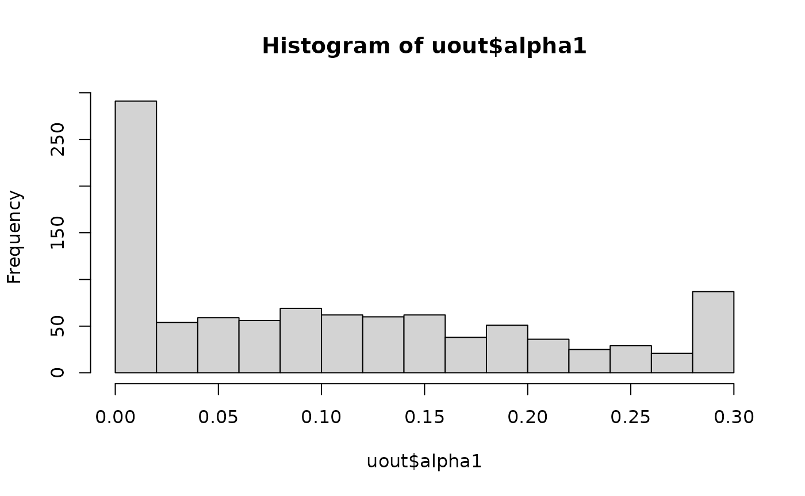
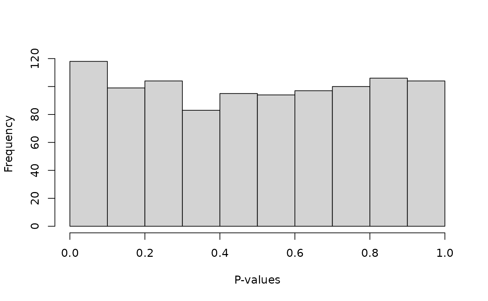
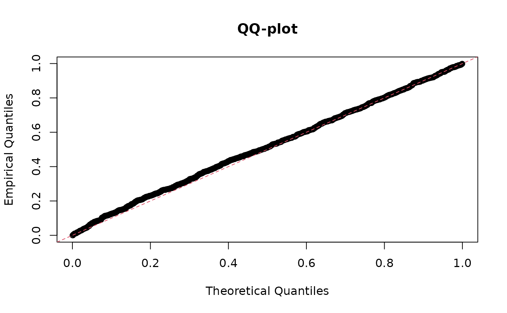
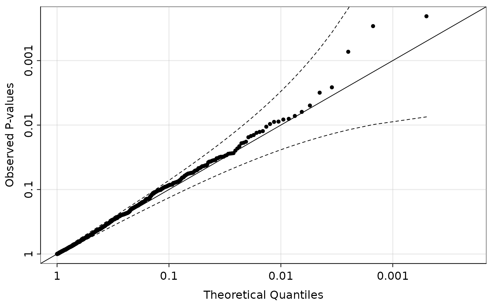

This vignette covers the basic usage of the hwep
package. The methods implemented here are described in detail in Gerard
(2022). We will cover:
Let’s load the package so we can begin.
Throughout this vignette, we will discuss the “double reduction
parameter”, which we should briefly clarify. This parameter is a vector
of probabilities of length floor(ploidy / 4), where
ploidy is the ploidy of the species. Element i
of this vector is the probability that an offspring will have exactly
i copies of identical-by-double-reduction (IBDR) alleles.
If alpha is this parameter vector, than
1 - sum(alpha) is the probability that an offspring has no
IBDR alleles.
The double reduction parameter is known to have an upper bound, based
on the model for meiosis considered. The largest bound typically assumed
in the literature is derived from the “complete equational segregation
model”, introduced by Mather (1935) and later generalized in Huang et
al. (2019). These bounds can be calculated by the
drbounds() function for different ploidies.
drbounds(ploidy = 4)
#> [1] 0.1666667
drbounds(ploidy = 6)
#> [1] 0.3
drbounds(ploidy = 8)
#> [1] 0.38571429 0.02142857
drbounds(ploidy = 10)
#> [1] 0.43650794 0.05952381
drbounds(ploidy = 12)
#> [1] 0.462662338 0.105519481 0.002705628During our analysis procedures, we typically assume that the double reduction parameter is between 0 and these upper bounds.
This package comes with a few functions to calculate the probabilities of gamete and offspring dosages given parental dosages. These generalize classical Mendelian inheritance to include rates of double reduction. We use the specific model derived by Fisher & Mather (1943), and later generalized by Huang et al. (2019).
dgamete(): This function will calculate gamete
dosage probabilities given the parental genotype. So, if we want to
calculate the probability of gametes having dosage 0, 1, and 2 when the
parent has a dosage of 3, the double reduction rate is 0.1, and the
ploidy is 4, we would run:
dgamete(x = 0:2, alpha = 0.1, G = 3, ploidy = 4)
#> [1] 0.025 0.450 0.525gsegmat(): Given a ploidy level and a double
reduction rate, this function will calculate all possible gamete dosage
probabilities for each possible parental genotype. The rows index the
parental genotypes and the columns index the gamete genotypes.
gsegmat(alpha = 0.1, ploidy = 4)
#> 0 1 2
#> 0 1.000 0.00 0.000
#> 1 0.525 0.45 0.025
#> 2 0.200 0.60 0.200
#> 3 0.025 0.45 0.525
#> 4 0.000 0.00 1.000From the above matrix, the probability of a gamete having dosage 1 when the parental dosage is 2 is 0.6.
gsegmat(alpha = 0.1, ploidy = 4)[3, 2]
#> [1] 0.6gsegmat_symb(): This function provides a symbolic
representation of the gamete segregation probabilities. In the output
a represents the probability of exactly zero copies of IBDR
alleles, b represents the probability of exactly one copy
of IBDR alleles, c represents the probability of exactly
two copies of IBDR alleles, etc…
gsegmat_symb(ploidy = 4)
#> 0 1 2
#> 0 "a+b" "0" "0"
#> 1 "(1/2)a+(3/4)b" "(1/2)a" "(1/4)b"
#> 2 "(1/6)a+(1/2)b" "(2/3)a" "(1/6)a+(1/2)b"
#> 3 "(1/4)b" "(1/2)a" "(1/2)a+(3/4)b"
#> 4 "0" "0" "a+b"zsegarray(): Instead of considering gamete dosages,
this function will calculate zygote dosage probabilities given
both parental genotypes. It will do this for each possible offspring
dosage and each possible parental genotype.
sega <- zsegarray(alpha = 0.1, ploidy = 4)
sega
#> , , offspring = 0
#>
#> parent2
#> parent1 0 1 2 3 4
#> 0 1.000 0.525000 0.200 2.500000e-02 4.440892e-17
#> 1 0.525 0.275625 0.105 1.312500e-02 6.661338e-17
#> 2 0.200 0.105000 0.040 5.000000e-03 3.330669e-17
#> 3 0.025 0.013125 0.005 6.250000e-04 2.220446e-17
#> 4 0.000 0.000000 0.000 4.440892e-17 4.440892e-17
#>
#> , , offspring = 1
#>
#> parent2
#> parent1 0 1 2 3 4
#> 0 6.661338e-17 0.4500 0.600 0.4500 0.00000e+00
#> 1 4.500000e-01 0.4725 0.405 0.2475 1.94289e-17
#> 2 6.000000e-01 0.4050 0.240 0.1050 0.00000e+00
#> 3 4.500000e-01 0.2475 0.105 0.0225 0.00000e+00
#> 4 0.000000e+00 0.0000 0.000 0.0000 0.00000e+00
#>
#> , , offspring = 2
#>
#> parent2
#> parent1 0 1 2 3 4
#> 0 6.661338e-17 0.02500 0.20 0.52500 1.000
#> 1 2.500000e-02 0.22875 0.38 0.47875 0.525
#> 2 2.000000e-01 0.38000 0.44 0.38000 0.200
#> 3 5.250000e-01 0.47875 0.38 0.22875 0.025
#> 4 1.000000e+00 0.52500 0.20 0.02500 0.000
#>
#> , , offspring = 3
#>
#> parent2
#> parent1 0 1 2 3 4
#> 0 6.661338e-17 2.220446e-17 0.000 0.0000 0.00
#> 1 1.110223e-16 2.250000e-02 0.105 0.2475 0.45
#> 2 6.661338e-17 1.050000e-01 0.240 0.4050 0.60
#> 3 8.881784e-17 2.475000e-01 0.405 0.4725 0.45
#> 4 8.881784e-17 4.500000e-01 0.600 0.4500 0.00
#>
#> , , offspring = 4
#>
#> parent2
#> parent1 0 1 2 3 4
#> 0 6.661338e-17 4.440892e-17 0.000 4.440892e-17 0.000
#> 1 0.000000e+00 6.250000e-04 0.005 1.312500e-02 0.025
#> 2 4.440892e-17 5.000000e-03 0.040 1.050000e-01 0.200
#> 3 4.440892e-17 1.312500e-02 0.105 2.756250e-01 0.525
#> 4 4.440892e-17 2.500000e-02 0.200 5.250000e-01 1.000Thus, the probability of an offspring dosage of 3 when parental dosages are 2 and 4, is
sega[4, 3, 5]
#> [1] 0.105Equilibrium frequencies can be generated with hwefreq()
for arbitrary (even) ploidy levels.
hout <- hwefreq(r = 0.1, alpha = 0.1, ploidy = 6)
round(hout, digits = 5)
#> [1] 0.55062 0.32437 0.10232 0.01998 0.00250 0.00019 0.00001Alternatively, you can control the number of iterations of random
mating before stopping. The population begins in a state where
r proportion of individuals have genotype
ploidy and 1-r proportion has genotype
0. It then updates each generation’s genotype frequencies
using freqnext(). E.g., for r=0.1 and
alpha=0.1, after the first round of random mating, we
have:
freqnext(freq = c(0.9, 0, 0, 0, 0.1), alpha = 0.1)
#> [1] 8.100000e-01 6.106227e-17 1.800000e-01 4.440892e-17 1.000000e-02
hwefreq(r = 0.1, alpha = 0.1, niter = 1, ploidy = 4)
#> [1] 8.100000e-01 6.106227e-17 1.800000e-01 4.440892e-17 1.000000e-02The main function for this package is hwefit(), which
implements various tests for random mating and equilibrium. This
function has parallelization support through the future package. We’ll
demonstrate using the future package assuming at least two cores are
available.
library(future)
availableCores()
#> system
#> 8
plan(multisession, workers = 2)Let’s simulate some data at equilibrium to demonstrate our methods:
geno_freq <- hwefreq(r = 0.5, alpha = 0.1, ploidy = 6)
nmat <- t(rmultinom(n = 1000, size = 100, prob = geno_freq))
head(nmat)
#> [,1] [,2] [,3] [,4] [,5] [,6] [,7]
#> [1,] 0 10 28 22 23 12 5
#> [2,] 1 7 25 35 15 15 2
#> [3,] 2 10 23 26 22 14 3
#> [4,] 3 12 18 26 19 15 7
#> [5,] 2 8 26 27 25 10 2
#> [6,] 0 11 19 31 26 10 3hwefit() expects a matrix of genotype counts, where the
rows index the loci and the columns index the genotype. So
nmat[i, j] is the count of the number of individuals that
have dosage j-1 at locus i.
You control the type of test via the type argument.
Using type = "ustat" will use the \(U\)-statistic approach to test for
equilibrium, as implemented in hweustat().
uout <- hwefit(nmat = nmat, type = "ustat")
#> Using 2 worker(s) to run hwefit() on 1000 loci...
#> Done!
#> Don't forget to shut down your workers with:
#> future::plan(future::sequential)The output is a list-like object that contains the estimates of
double reduction (alpha), the \(p\)-values for the test against the null of
equilibrium (p_hwe), as well as the test-statistics
(chisq_hwe) and degrees of freedom (df_hwe) of
this test.
On average, we obtain good estimates of the double reduction rate
mean(uout$alpha1)
#> [1] 0.1109858But the sampling properties of this estimator are highly variable, even for such a large sample size:
hist(uout$alpha1)
This highlights the difficulty in estimating double reduction using just a single biallelic locus.
The p-values are generally uniformly distributed, as they should be since we generated data under the null of equilibrium.
hist(uout$p_hwe, breaks = 10, xlab = "P-values", main = "")
qqplot(x = ppoints(length(uout$p_hwe)),
y = uout$p_hwe,
xlab = "Theoretical Quantiles",
ylab = "Empirical Quantiles",
main = "QQ-plot")
abline(0, 1, lty = 2, col = 2)
You can view this QQ-plot on the \(-log_{10}\)-scale using
qqpvalue(). This plot will also show the simultaneous
confidence bands for the QQ-plot from Aldor-Noiman et al. (2013), which
can also be calculated using ts_bands().
qqpvalue(pvals = uout$p_hwe, method = "base")
Make sure to shut down your workers after you are done:
plan("sequential")The other values of “type” run different procedures:
"mle": Runs likelihood procedures to test for
equilibrium and estimate double reduction. Only available for (even)
ploidies less than or equal to 10. This generally behaves similarly to
the \(U\)-statistic approach. This is
implemented by the hwelike() function."rm": Runs likelihood procedures to test for random
mating. This is implemented by the rmlike() function."nodr": Runs likelihood procedures to test for
equilibrium assuming no double reduction. This is implemented by the
hwenodr() function.Aldor-Noiman, S., Brown, L. D., Buja, A., Rolke, W., & Stine, R. A. (2013). The power to see: A new graphical test of normality. The American Statistician, 67(4), 249-260. doi: 10.1080/00031305.2013.847865
Fisher, R. A., & Mather, K. (1943). The inheritance of style length in Lythrum salicaria. Annals of Eugenics, 12(1), 1-23. doi: 10.1111/j.1469-1809.1943.tb02307.x
Gerard D (2022). “Double reduction estimation and equilibrium tests in natural autopolyploid populations.” Biometrics (In press). doi: 10.1111/biom.13722
Huang, K., Wang, T., Dunn, D. W., Zhang, P., Cao, X., Liu, R., & Li, B. (2019). Genotypic frequencies at equilibrium for polysomic inheritance under double-reduction. G3: Genes | Genomes | Genetics, 9(5), 1693-1706. doi: 10.1534/g3.119.400132
Mather, K. (1935). Reductional and equational separation of the chromosomes in bivalents and multivalents. Journal of Genetics, 30(1), 53-78. doi: 10.1007/BF02982205